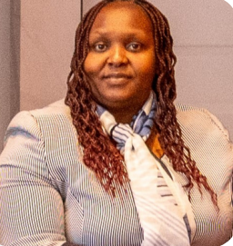
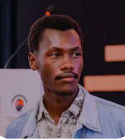
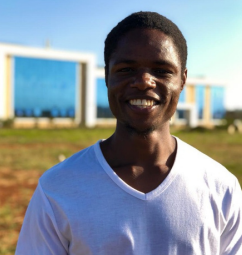
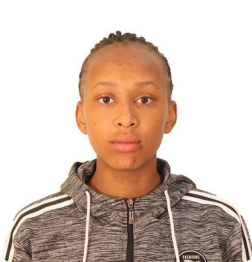
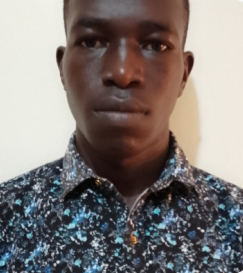

Explore. Research. Innovate.
Explore, research, and push boundaries to nurture innovation in a supportive environment.
The Zetech University Research and Innovation Club brings together students across faculties to research, innovate, and develop impactful solutions.
Explore, research, and push boundaries to nurture innovation in a supportive environment.
Collaborate, learn, and create impactful projects to unlock individual potential and shape the future.
Membership growth reflects rising student interest and engagement in innovation.
Members can access funding opportunities, mentorship programmes, apprenticeship platforms, and financial management support.
Club projects are intentionally designed to align with the United Nations Sustainable Development Goals and corporate social responsibility priorities, with the aim of delivering measurable community impact.
Explore the projectsOpen the club’s resource guide and portfolio directly from the site.
Resource document provided by ZURI Club.
Open Club Resources PDFPortfolio document provided by ZURI Club.
Open Club Portfolio PDFClub leadership supporting research, programmes, communications, and membership at Zetech University.

Patron

Chairperson
Interim Chairperson

Vice Chairperson

Programme Coordinator

Communication Director
Membership Chair